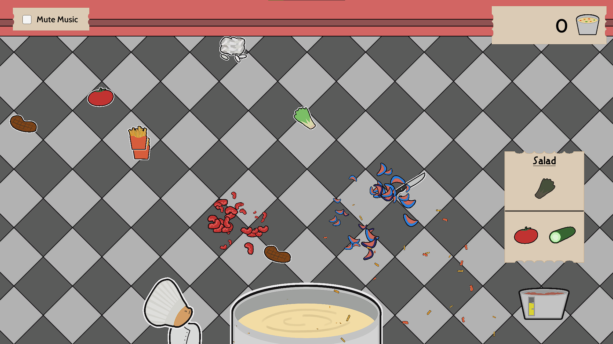

We Only Make Soup
We only make soup is a simple arcade-style game where the player shoots knives against unwanted ingredients, only allowing ingredients needed by the current recipe to reach the pot. This game was developed over 48 hours in Pixel Pasture's Game Jam. This game jam included a few large teams with more industry experience. As a result, we were proud to come 6th out of 22 teams. Play on itch.io.
My Contributions:
- Lead Programmer - Handled the majority of scripting
- Implemented 3 different movements patterns for ingredients, Straight, Wiggle and Curve
- Handled collisions of ingredients and the soup pot
- Implemented a system to update the docket icons with ingredients obtained. As well as swapping out the docket sprite on a completed recipe.
- Added ability for some recipes to randomise ingredients or require two ingredients in a step to increase gameplay variety
- Used static string file to easily add new recipes throughout development
- Developing UI
- Designed the UI of the in-game, start and screens using sprites from team artist
- Implemented most of the UI functionality, e.g start/stop game, score
